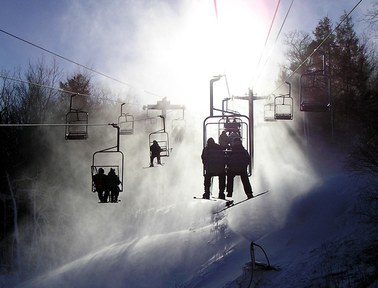

Choix et design

Le site utilise des couleurs froides en rapport avec le thème même de notre domaine, qui est la vente de matériel de sport d'hiver. Nous avons cru bon d'utiliser ces couleurs froides et neutres, rappelant celles de l'hiver, en particulier le ton et la luminosité aportée en haute montagne.